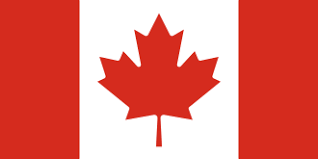
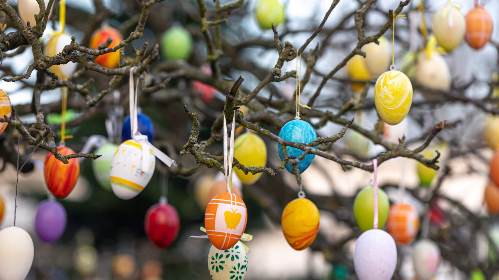
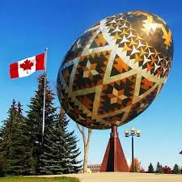

Tradições
“De Sexta-feira Santa até Segunda de Páscoa”
No país, o período é conhecido como “from Good Friday through Easter Monday”, ou seja, “de Sexta-feira Santa até Segunda de Páscoa”, sendo que segunda-feira, em algumas províncias, como Quebec e Alberta, é um feriado opcional, em outras o comércio funciona normalmente.
Este período de páscoa é composto de muitas festividades em família pelos canadenses. Os religiosos costumam frequentar as missas de sextas e domingos, e as famílias se reúnem para almoços, caça aos ovos e troca de presentes.
Caça aos Ovos
É uma tradição indispensável durante este período de festas, o “coelhinho” esconde diversos ovos de plástico com chocolate dentro, ou ovos de galinha pintados, para as crianças procurarem. Inclusive, é parte das tradições pintar ovos de galinha e utilizá-los na decoração.
Pratos Típicos
Durante as celebrações, é comum os canadenses aproveitarem para cozinhar o prato típico desta época: mustard-crusted lamb, ou seja, cordeiro com mostarda. Além disso, é comum vermos presunto como parte da alimentação, pois é visto como um alimento que traz sorte nesse feriado, de acordo com práticas pagãs.
Outro alimento que faz parte do almoço na Sexta-feira Santa é o hot cross buns, um pãozinho feito com condimentos, que possui uma cruz em cima como símbolo de cristo. A prática de comê-los durante o feriado de Páscoa é uma herança inglesa.